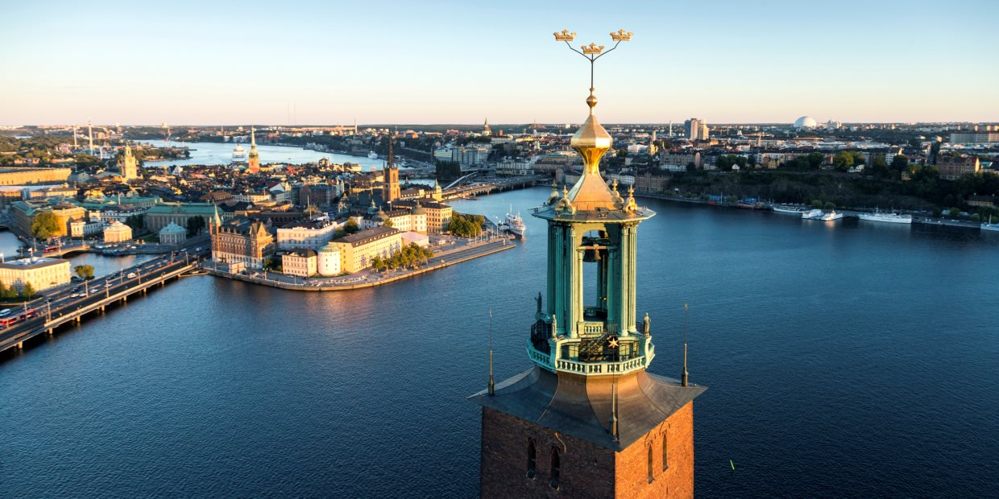

Welcome to
Stockholm's Municipality
Stockholm Municipality is a municipality in Stockholm County in east central Sweden. It has the largest population of the 290 municipalities of the country, but one of the smallest areas, making it the most densely populated. Stockholm is also one of the fastest growing regions in Europe. By year 2020, Stockholm is estimated to have one million residents.
